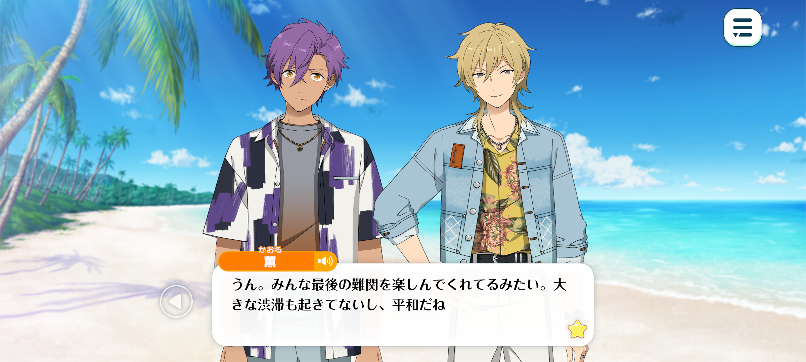
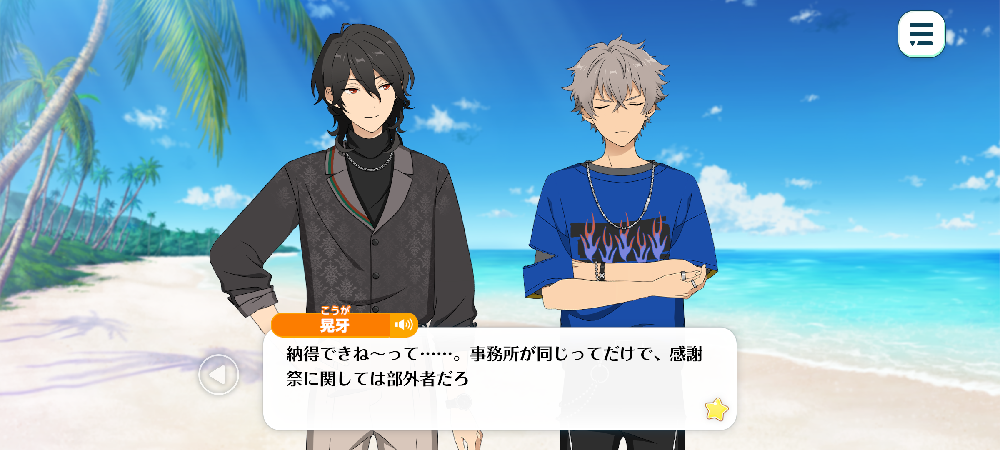
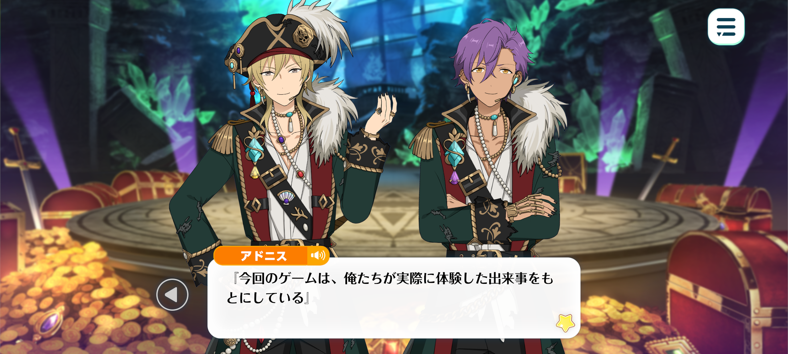
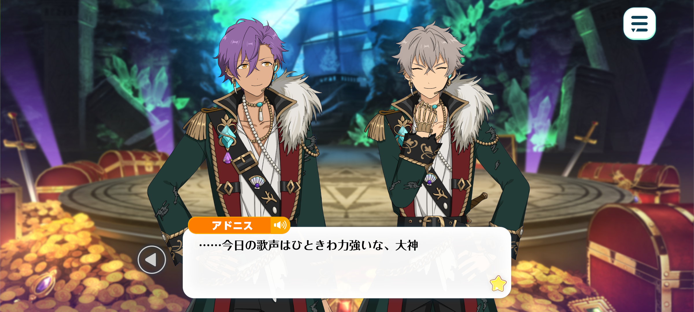
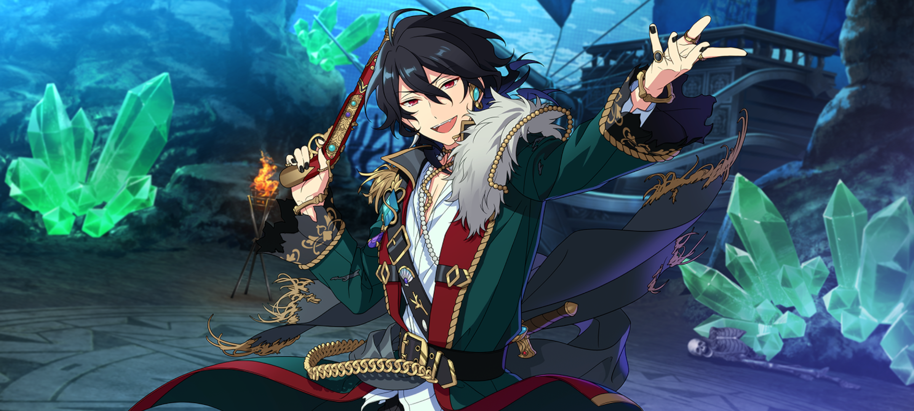
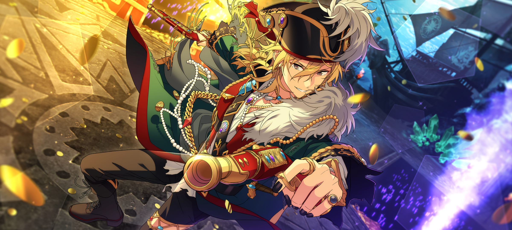

Velvet Ship
Epilogue


Time: A few hours later
Location: On a remote island, the second venue for the puzzle-solving game

Adonis: …Is that the location of the final puzzle?
Kaoru: Yup. Looks like everyone's having a blast with the final challenge. And there haven't been any major bottlenecks, either, which is great.
I think splitting it into two stages was the right call. Everyone starts off in town, searching for clues, before heading over to the island to follow the trail.
Since there's a limit to how many people can board the ship at once, we don't have to worry about everyone arriving all at once. It helps keep the crowds spread out across the different locations.
Koga: Ain't it kinda weird, though? Everyone's givin' it their all, but nobody's gettin' mad. Even when they screw up, they just laugh it off.
Kaoru: Fufu. That's the beauty of puzzle games ♪
At first, nobody knows anyone else, so there's a bit of awkwardness. But as you play together, make mistakes, and start feeling the pressure, you naturally grow closer.
Before you know it, you're calling out to each other without a second thought, sharing hints, and working together.
How often do you get to have that kind of experience with people you've only just met? It's pretty special, don't you think?
There's something really satisfying about watching a group of complete strangers tackle a challenge together and come away feeling like friends.
Koga: Hm. You've only done somethin' like this once before, right? Yet you're talkin' about it like it was somethin' real special.
Kaoru: I mean, that just goes to show what an impression it made on me, right?
Honestly, I'd love to join in myself~. But I feel like I'd just throw everyone off. Bad Kaoru~! Gotta learn some self-restraint.
Rei: Kukuku. I had a feeling you'd say that, so I've prepared a very special puzzle just for you.
Here. I've made a little map for you.
Adonis: Wow... Even though it's handmade, it looks just like a real treasure map.
Rei: I initially drew the map freehand myself, you see. But Hasumi-kun happened to pass by, took one look at it, and declared that he simply couldn't let me get away with such a thing. He ended up redrawing the whole thing for me.

Koga: “Couldn't let ya get away with it”…? That's kinda rude. Sure, we're in the same agency, but this appreciation event's got nothin' to do with him.
Rei: Well, you know how Hasumi-kun is. Once his creative spirit was stirred, he simply couldn't put his pen down! He said it was a nice way to take a break, but before long, he'd gotten completely absorbed in it.
Guiding one's companions along a winding trail through the power of deduction… Now that is what adventure is all about!
Come, let us, too, set sail upon the vast sea of mysteries… ♪
Kaoru: Let’s see… hm? Aren’t all these locations marked on the map just where all the food stalls are?
Rei: Well spotted, Kaoru-kun! Just as I'd expect from our navigator ♪
Kaoru: “Navigator”…? Wasn't that what we were calling the fans taking part in the puzzle game?
…Ah. So the game has already begun, huh?
Rei: Precisely! Since we have a live show to perform, let us set ourselves a time limit of one hour.
Today is a special day! Scattered across this island are renowned eateries- nay, veritable treasures serving the most delectable cuisine!
Thus, we have but one mission: to sample every last one of these treasures! We are~?
Koga + Adonis: UNDEAD!
Kaoru: Yeah, UNDEAD~...
Koga: Oi, that was quiet as fuck! Louder, man! Are you a pirate or not!?
Kaoru: Noo~, there’s fans just over there… I can’t, it’s way too embarrassing.
Adonis: Hakaze-senpai, with that attitude, you'll never overcome the trials that lie ahead.
Rei: Exactly! It’s one day or day one. There’s no time for embarrassment.
Accept your fate, Kaoru-kun ♪
Kaoru: ….Ugh, fine. We are~
Kaoru + Rei: UNDEAD!
Time: Two hours later
Location: On the island that the live is being held on

Kaoru: “Thank you all for coming to our live today!”
“Did you enjoy the little puzzle game we prepared for you?”
Adonis: “Everything was inspired by things we experienced firsthand.”
“…And some of you may have been wondering why we chose a pirate theme in the first place.”
Koga: “When we first came to this island to check it out, we came across a real pirate ship- or more like, a ghost ship. We decided to incorporate that experience into the game…”
“Oi! Why the hell are Adonis and I locked in a cage?!”
Rei: “Kukuku. You look rather good locked up, Koga ♪”
Koga: “Aw, thanks man ♪”
“…Wait, I take that back! I don't care if I look good or not! Why the hell are we in here?!”
Adonis: “Oogami, this is a recreation of a scene from the legendary Pirate Live performance.”
“We were locked in a cage back then, too.”
Koga: “Adonis! Don't give your explanation so damn calmly whilst MC’ing!”
Adonis: “? You were the one who asked me to explain. I thought the audience might also like to know the reason.”
“Otherwise, everyone might be left wondering why we're in a cage.”
Koga: “Don't say it with such a straight face~! I don't care what it's a reference to! Just get us outta here. We've got a new song to perform!”
Adonis: “That's true. We cannot perform while we're trapped in this cage.”
“Stand back a little. I'll get us out.”
“Ghh… NNGAAAAH…!”
Kaoru: “Whoa! You bent those bars like they were nothing! You're as cool as ever, huh?”
“Just so everyone knows, those are real iron bars!”
Koga: “Fuah, feels good to be free.”
“I'm gonna let all this pent-up frustration out! We're goin' all out from the very first note!”
“♪~♪~♪”

Adonis: …Your voice is particularly powerful today, Oogami.
Koga: Hah? 'Course it is! I'm feelin' great!
Remember Pirate Live? Lookin' back, that stage was pretty damn small…
And now, before we even realised it, we've become a unit big enough to rent out an entire island.
But we can't get too comfortable. The idol industry is a vast ocean, after all.
We're gonna charge into the future so fast no one'll be able to keep up with us, until we've conquered every last corner of the world! Rock 'n' roll…☆
Adonis: Fufu… I could never forget it, even if I tried. Compared to this stage, that one certainly was small.
But to me, it was a place beyond comparison. The place where I took my very first step.
Let us continue onward, toward uncharted waters. Our voyage is far from over.
There's no need to worry. With our fans supporting us, our ship can weather any storm.
“♪~♪~♪”
Rei: Kukuku. What a truly magnificent sight! To think how far we've come.
I once believed I'd experienced everything this world had to offer. And yet, here I stand, my heart racing at the prospect of a new adventure. With all of you by my side, life is never dull…♪

All those years we've spent singing together - every single one has brought us to this very day.
So let us unfurl our sails and set forth! With our song as our compass, we'll journey onward, wherever the currents may carry us!
“♪~♪~♪”
Kaoru: Ahaha. It really does feel like we're aboard a ship, doesn't it~?
Some of you who've come to see us today have been supporting us for a long time, while others might have only just discovered us.
But no matter how you came to know us, here you all are, waving your light sticks together. Makes me really happy to see.
…Seriously, everyone, thank you.
UNDEAD will only keep growing.

Even when the seas get rough, or the winds refuse to carry us forward, I feel like I can go anywhere as long as I've got these guys by my side.
…Fufu. The old me would never have imagined I'd say something like that.
“Everyone here today, I love you all! You'll keep cheering us on, won't you?”
Rei + Kaoru: “We are~?”
Koga + Adonis: “UNDEAD…♪”